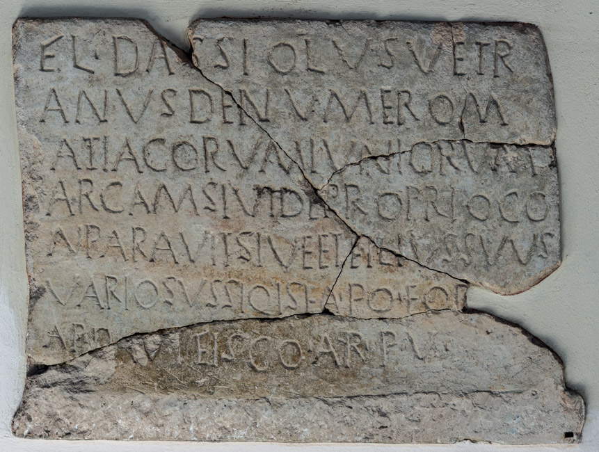

The Inscription of Dassiolus
PHYSICAL DESCRIPTION
- Type
- Lateral panel of the sarcophagus.
- Material(s)
- Limestone.
- Execution
- Inscribed.
- Dimensions
- 60 × 80.5 cm
- Epigraphic Field
- 60 × 80.5 cm
- Letters Height
- 4-5.5 cm
Palaeographic comment
Dextrorse direction, horizontal alignment, vertical module, irregular ductus, left-aligned layout.

INSCRIPTION
INTERPRETATIVE TRANSCRIPTION
Fl(avius) Dassiolus, vet<e>r
=
anus de numero M
=
at<t>iacorum iuniorium,
arcam sivi (!) de proprio co
=
nparavit (!) sive (!)
et filius (!) suus (!)
Variosus (!). Si q<u>is ea<m> p(ost) o(bitum) e(orum) vol(uerit)
ap(erire), dạvi<t> (!) fisco ar(genti) p(ondo) V.
APPARATUS CRITICUS
5. SIV ET, Bertolini 1875a, Bertolini 1875b; SIVE EI,
CIL V 8744
.
6. IA,
CIL V 8744
.
TRANSLATION
Flavius Dassiolus, a veteran of the numerus of the Mattiaci iuniores, purchased this arca with his own funds for himself and for his son, Variosus.
Should anyone wish to open it after their decease, he shall pay five pounds of silver to the resources of the fiscus.
PEOPLE
Flavius Dassiolus
- NOMEN
- Flavius
- COGNOMEN
- Dassiolus
- GENS
- Flavia
- ORIGIN (of the name Dassiolus)
- germanic
- GENDER
- male
- OCCUPATION
- soldier
- RANK
- veteranus
- NUMERUS
- Mattiaci Iuniores
- ROLE
- dedicator/deceased
Variosus
- COGNOMEN
- Variosus
- GENS
- Flavia
- ORIGIN (of the name Variosus)
- latin
- GENDER
- male
- OCCUPATION
- soldier?
- ROLE
- deceased
Bibliography
| Bertolini 1875a, 44, 108, n. 45. |
| Bertolini 1875b, 120, n. 14. |
| CIL V 8744 |
| Bertolini 1878, 48. |
| ILCV 555 |
| Hoffmann 1963, 45, n. 28. |
| Lettich 1983, 88-89, n. 48. |
- EDR
-
EDR097737
- Author of the record:
- Damiana Baldassarra Fanco Luciani
- Date:
- 11-06-2013
COMMENTARY
Flavius Dassiolus was a veteranus of the Mattiaci iuniores. He chose not to specify his military rank and perhaps remained a miles (an ordinary soldier) throughout his career. The auxilium palatinum of the Mattiaci iuniores is recorded as being deployed at times in Gaul (ND occ. 5, 167; 7, 64) and at others in the East (ND or. 6, 53).
Lines 5 and 6 are not easily interpreted. Hoffmann argues that the name of Dassiolus's son, Variosus, was erroneously declined in the nominative instead of the dative case (Hoffmann 1963, 45, n. 28). In such a case, Dassiolus would have purchased the arca for himself and for his son. As noted by Lettich, this interpretation would indicate a long-term presence of this unit in Concordia (Lettich 1983, 89). This hypothesis appears to be supported by the recently discovered site plan, which shows the sarcophagus of Dassiolus intermingled with civilian burials.
In Late Antiquity, the sons of soldiers were obliged to take up their fathers' profession (CTh. 7.18.10). However, as the son's age was not inscribed at the time this epigraph was produced, it is impossible to know whether Variosus was already a soldier in active service.
The sarcophagus of Dassiolus was located not far from the northern section of the burial ground. A little further north was the burial of Ianuarinus, another member of the Mattiaci iuniores. Still further north was the arca of a member of the Mattiaci seniores, Flavius Agustus, the only burial in the northern section of the necropolis that can be identified with certainty as belonging to a soldier.
The arrangement of the archae suggests that the Mattiaci (both iuniores and seniores) were the first numeri to be permanently stationed in Concordia. Conversely, the Batavi, whose burials are concentrated near the southern edge, likely reached the colony at a later stage, characterized by a more massive military presence that led to the creation of distinct burial areas for the various units.